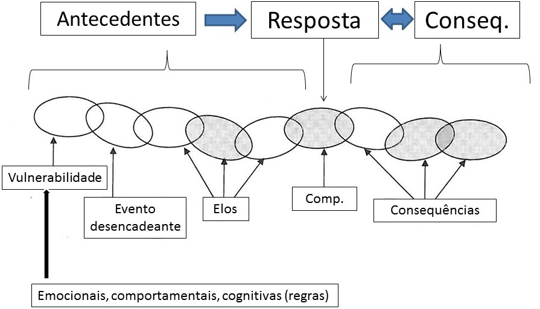

O Cérebro em Pânico: A Ciência (e a Estupidez) por trás do Tratamento de Medos em Cães¶
Por que a exposição forçada (Flooding) quebra a mente do seu cão, e como a Dessensibilização Sistemática reprograma a amígdala cerebral.
1. O Mito do “Ele tem que enfrentar”: A falácia de curar trauma com terror¶
Imagine que você sofre de acrofobia (um pavor incontrolável de altura). Aquele medo visceral que faz suas mãos suarem e suas pernas travarem só de subir num banquinho. Agora, imagine que eu, seu autoproclamado “terapeuta comportamental”, decido que a cura definitiva é te pendurar pelos tornozelos no 20º andar de um arranha-céu até você “perceber que não caiu” e “acostumar com a vista”.
Soa como tortura? Soa ridículo? Pois é. Mas é exatamente isso que milhares de tutores fazem com seus cães todos os dias sob o pretexto de “socialização” ou “adestramento raiz”.
Existe uma crença popular — quase uma lenda urbana — de que o medo é uma frescura, uma “falha de caráter” do animal. Baseado nessa lógica de boteco, arrastam o cão para o meio da queima de fogos, forçam a interação com cães agressivos ou o obrigam a ser tocado por estranhos.
Fato Neurobiológico: O Sequestro da Amígdala
Quando seu cão entra em pânico, o cérebro dele é literalmente sequestrado. Veja os bastidores:
- A Amígdala (o botão de pânico) dispara o alarme.
- O corpo é inundado por Cortisol e Adrenalina.
- O Córtex Pré-Frontal (raciocínio e lógica) é temporariamente desligado.

Ou seja, exigir que um cão “aprenda” enquanto está aterrorizado é fisiologicamente impossível. É como pedir para alguém resolver uma equação de segundo grau enquanto foge de um leão.
2. A Lente da Ciência: A Análise Funcional¶
Comportamento não é mágica; é matemática biológica. Nós não “consertamos” o cachorro; nós consertamos o ambiente onde o cachorro vive.
Para fazer isso, utilizamos a Análise Funcional (ou Tríplice Contingência), derivada dos estudos de B.F. Skinner.
B.F. Skinner
O comportamento é selecionado por suas consequências.
O Código Fonte: A — B — C¶

- A — Antecedentes (O Gatilho): O que acontece antes. O som da chave, a visita, o trovão. O "A" avisa ao cérebro que uma oportunidade de reforço ou punição está disponível.
- B — Resposta (A Ação): O que o cão faz. Late, esconde, morde. O amador foca aqui; o profissional sabe que isso é só o sintoma.
- C — Consequências (O Resultado): O que acontece depois. Se o comportamento continua, é porque está sendo reforçado.
O “Pulo do Gato”: Manipulando a Variável A¶
Aqui está o segredo: Para tratar o medo, você não ataca o comportamento (B); você manipula o Antecedente (A).
Exemplo de cenário de medo: 1. (A) Visita estranha entra. 2. (B) Cão foge e se esconde. 3. (C) Visita não toca no cão (segurança).
O cão aprendeu que "se esconder funciona".

A Engenharia do Comportamento
O erro é tentar corrigir o B (puxar o cão). A solução é mudar o A: a visita aparece a 10 metros, de costas. Tornamos a fuga desnecessária.
3. Flooding (A Roleta Russa Emocional)¶
O Flooding (ou Inundação) pega a lógica da Análise Funcional e joga no lixo. Ele bombardeia o animal com o Antecedente mais aversivo possível, impedindo a fuga.
A lógica (torta) é: “Quando ele cansar, ele vai ver que não morreu.”
O Engodo Visual: “Olha, ele acalmou!”¶
O problema é que o Flooding é um mentiroso. Você expõe o cão, ele reage, entra em pânico e, de repente... para. Fica imóvel. O tutor acha que ele "entendeu". A ciência chama isso de Desamparo Aprendido (Learned Helplessness).
A Ciência por trás do “Travar”: Martin Seligman¶
Perigo: Desamparo Aprendido
Descoberto por Martin Seligman, o Desamparo Aprendido ocorre quando o animal percebe que nenhuma ação sua altera o resultado.
- Hiperestimulação: Amígdala inunda o sistema de cortisol.
- Falha na Contingência: O cão perde a agência.
- Shutdown: O corpo congela para economizar energia, mas a frequência cardíaca continua disparada (200+ bpm).
O cão não aprendeu a gostar; ele aprendeu que é impotente. Isso é uma bomba-relógio.

4. Dessensibilização Sistemática (A Ciência do “Quase Nada”)¶
Se o Flooding é um martelo, a Dessensibilização Sistemática (DS) é um bisturi a laser. Desenvolvida por Joseph Wolpe, baseia-se na Inibição Recíproca: é impossível estar relaxado e aterrorizado ao mesmo tempo.
Nós fatiamos o problema em pedaços tão pequenos que o botão de pânico nem chega a ligar.
O Segredo: O Limiar de Tolerância (Threshold)¶
Imagine um "Termômetro do Medo" (0 a 100): * 0–20: Relaxado. * 20–50: Alerta. * 80–100: Pânico (Zona do Flooding).
A mágica acontece na faixa 20 a 40. O cão nota o estímulo, mas não reage negativamente.
A Equação do Sucesso: DS + CC¶
Para blindar a mente, usamos a fórmula:
(Antecedente Baixo) + (Comida Deliciosa) = Nova Emoção
- Dessensibilização (DS): O "monstro" aparece a 50 metros.
- Contracondicionamento (CC): Imediatamente, chove frango ou brinquedo.
O cérebro muda a previsão: de "perigo iminente" para "jantar chegando".

5. Batalha Prática: O Preço do “Caminho Mais Curto”¶
Muitos vendem o Flooding porque parece rápido. A Dessensibilização parece lenta. Mas na biologia, rápido quase sempre significa caro.
| Critério | Flooding (Inundação) | Dessensibilização Sistemática |
|---|---|---|
| Definição | Exposição intensa e inescapável ao estímulo aversivo (medo) até que a reação de fuga cesse. | Exposição gradual e controlada ao estímulo, sempre abaixo do limiar de medo. |
| Mecanismo | Extinção forçada. Tenta "quebrar" a resposta de medo pela exaustão. | Habituação + Contracondicionamento. Substitui o medo por uma emoção positiva. |
| O que o cão sente | Pânico, impotência, terror. | Curiosidade, calma, expectativa de recompensa. |
| O que acontece no cérebro | Sequestro da Amígdala. O córtex pré-frontal (raciocínio) desliga. Alta liberação de cortisol. | Córtex ativo. O cão continua pensando e aprendendo. Baixo estresse. |
| Risco de Trauma | Altíssimo. Pode gerar Sensibilização (o medo piora) ou Agressividade. | Quase zero. O treino para se o cão mostrar desconforto. |
| Resultado Comum | Desamparo Aprendido. O cão "trava" por fora, mas continua em pânico por dentro. | Confiança real. O cão aprende que é capaz de lidar com a situação. |
| Tempo de "Cura" | Curto prazo (parece funcionar em minutos, mas geralmente falha depois). | Longo prazo (demora semanas/meses, mas é definitivo). |
Por que a pressa é inimiga da perfeição?¶
O Flooding ignora a precisão. Se der errado, você não volta para o zero; volta para o -10. Um cão pode passar a ter medo de luzes, barulhos e de você.
A Dessensibilização é a única que constrói uma fundação sólida onde o medo é substituído por confiança.
6. Conclusão: Seja o Engenheiro, Não o Carrasco¶
Amor não é suficiente. É preciso competência.
A maioria traumatiza por ignorância, acreditando no mito heroico do enfrentamento. Mas a biologia responde a estímulos, não a heroísmo. Tentar arrancar a defesa do cão na marra é como consertar um computador com uma marreta.
O Caminho da Inteligência
A Dessensibilização Sistemática é engenharia comportamental. Exige paciência, manipulação do ambiente e fatiar o problema. Mas é a única forma de reescrever a história emocional do seu cão.
Seja o porto seguro que ele precisa, não a fonte do trauma que ele teme.
7. Referências Bibliográficas¶
- Universidade Cão (Ernesto Uszko). Material Didático: Análise Funcional.
- Skinner, B.F. (1938). The Behavior of Organisms. (Comportamento selecionado por consequências).
- Wolpe, J. (1958). Psychotherapy by Reciprocal Inhibition. (Dessensibilização Sistemática).
- Seligman, M. E. P. (1972). Learned Helplessness. (Desamparo Aprendido).
- Ramirez, K. (1999). Animal Training. (Reforço positivo em ambientes complexos).
- Lindsay, S. R. (2000). Handbook of Applied Dog Behavior. (Riscos de métodos aversivos).